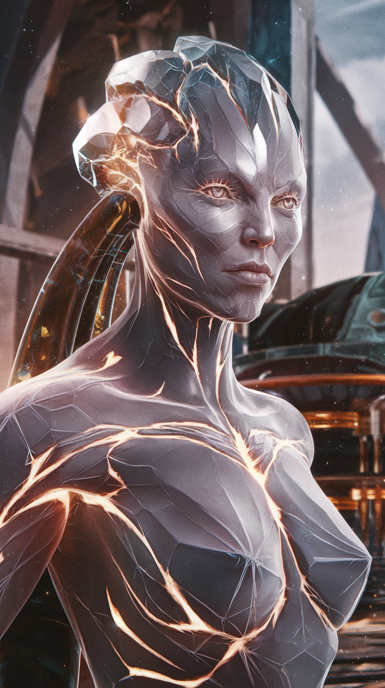
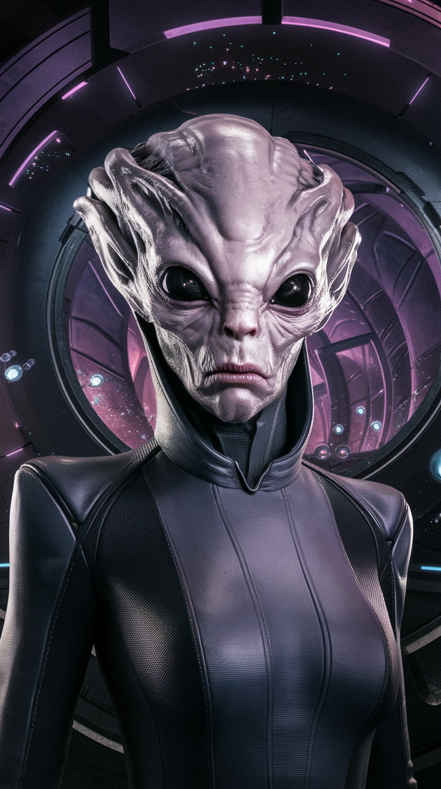
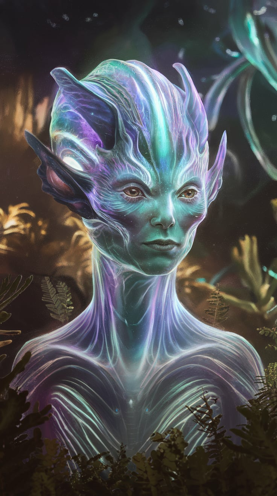

Аркторы
Аркторы — это кристализированные существа, обладающие необычными способностями. Их тела состоят из прочных кристаллических структур, что даёт им невероятную силу и выносливость. Они были первыми, кто освоил технологию создания порталов.

Эбены
Эбены — высокоразвившаяся раса, обладающая передовыми технологиями, включая нанотехнологии и биоинженерию. Они часто проводят эксперименты на других расах, стремясь создавать гибриды для улучшения своей силы и интеллекта.

Луминары
Луминары — существа света, которые обладают уникальной способностью манипулировать энергией. Их тела состоящие из света, создают впечатляющий визуальный эффект. Луминады крайне миролюбивы и ценят знания, исследуя вселенную в поисках истины.